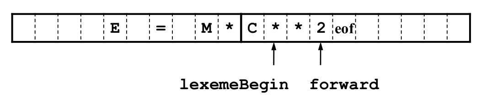
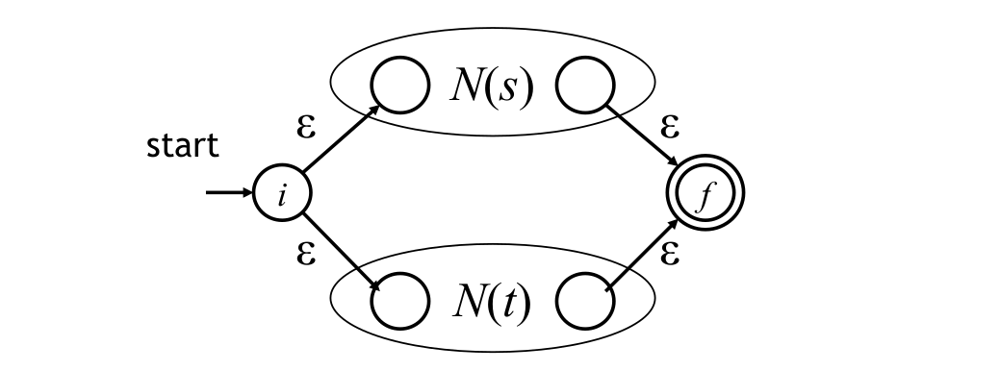
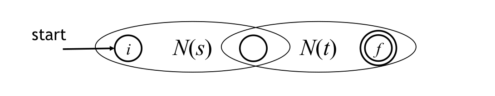

編譯器設計
課程名稱：編譯器設計 (Complier Design)
授課教師：游逸平
開課單位：資科工碩
教科書：Compilers: Principles, Techniques, and Tools (2nd edition) （aka. 龍書）
課程網站：https://people.cs.nctu.edu.tw/~ypyou/courses/Compiler-grad-s19/
Introduction
Overview
- Use an intermediate representation (IR)
- Reuse components
Steps for Generating an Executable Program
a.c —COMPILER—> a.s —ASSEMBLER—> a.o —LINKER—> a.out/a.exe —LOADER—> execution
The Structure of a Compiler

- Symbol table
- A data structure containing a record for each identifier, with fields for the attributes
- identifier
- lexical analysis
- attributes
- syntax analysis
- semantic analysis
- Error Handler
Lexical Analysis
divides program text into “words” or “tokens”
- A stream of tokens
- Whitespace and comments are removed
1 | if (b == 0) a = b; |
| lexeme | if | ( | b | == | 0 | ) | a | = | b | ; |
|---|---|---|---|---|---|---|---|---|---|---|
| token | KWif | ( | ID | == | NUM | ) | ID | = | ID | SEMI |
Syntax Analysis (Parsing)
understand sentence structures
- Abstract syntax tree built from parsing rules
1 | a := b + c * 60 |
1 | := |
Semantic Analysis
try to understand “meaning” (but hard to machine)
- Compilers perform limited analysis to catch inconsistencies
- Types checked; references to symbols resolved
Intermediate Code Generation
Constructs intermediate representations (IRs) for code optimization
1 | := |
1 | temp1 := c * 60 |
Code Optimization
Automatically modify programs so that they
- Run faster
- Use less memory
- Consume lower power
- Conserve some resource
Code Generation
Produces assembly code
1 | temp1 := id3 * 60.0 |
1 | LDF R2, id3 |
Lexical Analysis
1 | if (b == 0) a = b; |
| lexeme | if | ( | b | == | 0 | ) | a | = | b | ; |
|---|---|---|---|---|---|---|---|---|---|---|
| token | KWif | ( | ID | == | NUM | ) | ID | = | ID | SEMI |
- Transform multi-character input stream to token stream
- Reduce length of program representation (remove spaces)
Tokens, Patterns and Lexemes
- Tokens
- Token is a sequence of characters that can be treated as a single logical entity.
- e.g. identifier, keyword, operator
- Patterns
- A set of strings in the input for which the same token is produced as output. (regular expression)
- e.g. [A−Za−z_]
- Lexemes (詞位)
- A lexeme is a sequence of characters in the source program that is matched by the pattern for a token.
- e.g. x, y; if, else
Input Buffering
Sometimes lexical analyzer needs to look ahead some symbols to decide about the token to return.
1 | -, =, < could also beginning of a two-character operator like ->, ==, <- |
Buffer pairs
Use two-buffer scheme to handle large lookaheads safely.

- a buffer divided into two N-character halves (e.g. N = 1024)
- read N chars into buffer with system read command (v.s. using one system call per character)
- if fewer than N chars, than marks eof at the end of the source file
- Two-pointers
- lexemeBegin : marks the begining of the current lexeme
- forward : scans ahead until a pattern match is found
lexeme 找到後 lexemeBegin 移至剛剛找到的 lexeme 後方的字元，forward 移至其右端
Sentinels (哨兵)
Without sentinel, we need two tests for out-of-bound for every forward
- one for the end of the buffer
- one to determine what character is read
We can combine the buffer-end test with the test for the current character if we extend each buffer to hold a sentinel character at the end (eof).

Comparison
Input buffering with buffer pairs:
1 | // 1. Check the end of the buffer |
Input buffering with sentinels:
1 | forward += 1 |
Visualized detail: https://www.slideshare.net/dattatraygandhmal/input-buffering
Regular Expressions
Use regular expressions (REs) to describe programming language tokens
Language
A regular expression R describes a set of strings of characters denoted L(R), also called a regular set
| Regular Expression, R | Strings in L(R) |
|---|---|
| a | “a” |
| ab | “ab” |
| a|b | “a”, “b” |
| (ab)* | “”, “ab”, “abab”, … |
| (a|ε)b | “ab”, “b” |
Suppose r and s are RE denoting L(r) and L(s)
- (r) is a RE denoting L(r)
- (r)|(s) is a RE denoting L(r)∪L(s)
- (r)(s) is a RE denoting L(r)L(s)
- (r) is a RE denoting (L(r))
Algebraic Laws for REs
| LAW | DESCRIPTION |
|---|---|
| r|s = s|r | | is commutative |
| r|(s|t) = (r|s)|t | | is associative |
| r(st) = (rs)t | concatenation is associative |
| r(s|t) = rs|rt; (s|t)r = sr|tr | concatenation distributes over | |
| εr = rε = r | ε is the identity for concatenation |
| r* = (r|ε) | ε is contained in * |
| r** = r | * is idempotent (冪等) |
Extensions of REs
| REs | DESCRIPTION | ALIAS |
|---|---|---|
| R+ | one or more strings of R | R(R*) |
| R? | optional R | R|ε |
| [abcd] | one of listed characters | (a|b|c|d) |
| [a-z] | one character from this range | (a|b|c|d…|z) |
| [^ab] | anything but one of the listed chars | |
| [^a-z] | one character not from this range |
Regular Definitions
give names to regular expressions
1 | name -> regular expression |
1 | e.g. digit = [0-9], posint = digit+ |
Restrictions on REs
Regular expressions are not capable of describing most complete languages.
They describe languages composed of sets of strings of the form :
They cannot describe:
- Balanced nesting constructs
- e.g. if … then … else …
- Repetition of the same string
- e.g. {wcw | w is a string of a’s and b’s}
- Constructs where the number of repetitions is fixed by the value of a part of the string
- e.g. nHa1a2 …an
Anything that needs to “memorize” “non-constant” amount of information happened in the past cannot be recognized by regular expressions
Chomsky Hierarchy

- Unrestricted languages (type 0)
- Turing machines
- Context-sensitive languages (type 1)
- Linear bounded automata
- Context-free languages (type 2)
- Pushdown automata
- Regular languages (type 3)
- Finite automata
Interaction between Scanner & Parser
Attributes of Tokens
| Lexemes | Token Name | Attribute Value |
|---|---|---|
| if | if | - |
| then | then | - |
| else | else | - |
| id | id | Pointer to table entry |
| number | number | Pointer to table entry (or the value of the number) |
| < | relop | LT |
| <= | relop | LE |
| = | relop | EQ |
| <> | relop | NE |
| > | relop | GT |
| >= | relop | GE |
Implementation of Lexical Analysis
Use Transition Diagram

Recognizes reserved words
problem: keyword maybe recognize as an identifier
Two solutions:
- Install the reserved words in the symbol table initially
- installID() : place identifier in the symbol table if it is not already there, and return a pointer to the symbol-table entry for the lexeme found
- getToken() : return token name (either id or one of the keyword tokens that was initially installed in the table)

- Create separate transition diagrams for each keyword
Finite Automata
Recognizers which simply say “yes” or “no” about each possible input string
Definition
Epsilon Moves
Machine can move from state A to state B without reading input
Nondeterministic Finite Automata (NFA)

- Can have multiple transitions for one input in a given state
- Can have ε-moves
Deterministic Finite Automata (DFA)

- One transition per input per state
- No ε-moves
NFA vs DFA
- DFA
- Action on each input is fully determined
- Easier to implement
- NFA
- May have choices at each step
- Accepts string if there is ANY path to an accepting state
- More complex in implementation
- May need to backtrack
- May end up exploring all the paths in the NFA
Transition Table

| State | a | b | ε |
|---|---|---|---|
| 0 | {0, 1} | {0} | ∅ |
| 1 | ∅ | {2} | ∅ |
| 2 | ∅ | {3} | ∅ |
| 3 | ∅ | ∅ | ∅ |
- Columns are input symbols
- Rows are current states
- Entries are resulting states
- Pros and Cons
- Pro
- easily find the transitions
- Con
- take lots of space
- Pro
RE to Automata


Thompson’s construction


Suppose N(s) and N(t) are NFA’s for RE s and t
- r = s|t

- r = st

- r = s*

- Precedence of Operators
- Kleene closure (*), ?, +
- concatenation
- alternation
- All operators are left associative
Subset Construction
- remove ε-transitions to get a DFA

Operations on NFA States
- ε-closure(s)
- s 可以透過 ε-transition 到達的 NFA state 的 set
- ε-closure(T)
- 在 set T 裡面的 NFA state s 可以透過 ε-transition 到達的 NFA state 的 set
- move(T, a)
- 在 set T 裡面的 NFA state s 可以透過 input symbol a 到達的 NFA state 的 set
Converting NFA to DFA
- Construct the initial state of the DFA
- finding ε-closure(s0)
- From a state T in the DFA, for each input character a
- finding ε-closure( move(T, a) ), say U
- make U a state in DFA if it is not there yet
- if U contains at least one final state in NFA, then mark it as a final state in DFA
- make T x a -> U a transition in DFA
- Repeat the step above for all states in DFA that has not been processed yet
Minimized DFA
同個 language 可以用不同的 DFA 來表示，所以我們可以找到最少 state 的 DFA 來優化從 NFA 轉過來的 DFA。
key principle : merge 有相同行為的 state
- final states 與 non-final states 不可 merge
- 對所有 x 從 state s 到 t，若所有 acceptance decision 相同，則 s 與 t 有相同的行為
流程：
- 初始化
- 將 final state 與 non-final state 區格開
- 區分不同的群組 G
- 對所有 input symbol a，在 G 中的兩個 state s 與 t 可以通過 a 轉到相同的群組，則 s 與 t 屬於同一個群組
- 除此之外，將 s 與 t 放至不同群組中
- 重複直到群組不再變化
例子：
-
Final-state: {E}
Non-final-state: {A, B, C, D}
-
Try to split {A,B,C,D}
- for input a
- A,B,C,D all go to {A,B,C,D} on a
- for input b
- A,B,C go to {A,B,C,D} on b
- D goes to {E} on b
- {A,B,C,D} → {A,B,C},{D},{E}
- for input a
-
Try to split {A,B,C}
- for input a
- A,B,C all go to {A,B,C} on a
- for input b
- A,C go to {A,B,C} on b
- B goes to {D} on b
- {A,B,C},{D},{E} → {A,C},{B},{D},{E}
- for input a
-
A,C go to the same states on each input
Implementation of Lexical Analyzer Generator

Ambiguity Resolution
Longest match
- match 最長的 pattern
- 在 accept 前需要 lookahead
First match
- conflict 時選最先列出的 rule
Lookahead
有些情形 longest match 和 first match 無法處理
e.g. In fortran:
treat IF a keyword: IF (a = b) THEN …
treat IF a identifier: IF (I, J) = 3 …
1 | IF / \( .* \) letter {return IF} |
/ 後方可以 match additional pattern 但是不 match lexeme，所以下次的 match 是從 ( 開始，而不是 letter 後方
Lexical Analyzer Generator: Lex
當 RE 能有多個 match 情形時，考慮：
- Longest matching token
- Token specification order
Syntax Analysis
Goal – 判斷 input token stream 是否滿足程式語言的 syntax
1 | if (b == 0) a = b; |
Lexical Analyzer or Scanner:
| lexeme | if | ( | b | == | 0 | ) | a | = | b | ; |
|---|---|---|---|---|---|---|---|---|---|---|
| token | KWif | ( | ID | == | NUM | ) | ID | = | ID | SEMI |
Syntax Analyzer or Parser:
1 | if |
速成 Syntax Analysis: https://www.youtube.com/watch?v=uPnpkWwO9hE&list=PLW1OMpQZxu7xMh7nuDQYQ2mDcqY2hzBWk
Syntax Error-Recovery Strategies
- Panic-mode Recovery (simple)
- 忽略 input symbols 直到找到 synchronizing tokens (通常是 delimiter)
- Phrase-level Recovery
- 局部修正錯誤
- e.g. comma → semicolon, insert/delete semicolon
- Error-productions
- 將可能的 error 情形寫成 productions 加到 grammar 中
- 產生對應的 error diagnostics
- Global-correction (theoretical)
- 選擇需要 cost 最小的地方做修正
Context-Free Grammars
More on CFGs, see: 正規語言概論
Grammar Transformations
消除 ambiguity
有多種 parse trees 的 grammar 稱為 ambiguous grammar
solution : 重寫 grammar
例子1: 對每個 precedence level 多加一個 nonterminal
1 | E → E + E | E * E | –E | (E) | id |
problem:
無法辨識有結合律的語句 (e.g. id + id + id)
solution:
E → E + E ，因為 + 的兩側都是 E ，需要將 E 轉成另一個 nonterminal 來解決結合律的問題: E → E + T | T
1 | E → E + E | T |
例子2: if 的巢狀結構 (重寫 grammar 有時可能需要對某些情形做特判)
1 | stmt → if-stmt | while-stmt | ... |
- input: if (a) then if (b) then x = c else x = d
- ambiguity:
- if (a) then {if (b) then x = c} else x = d
- if (a) then {if (b) then x = c else x = d}
solution:
1 | if-stmt → unmatched-stmt | matched-stmt |
一旦進入 matched-stmt 就無法再回到 unmatched-stmt
消除 left recursion
A grammar is left recursive if it has a nonterminal such that there’s a derivation a for some string
Top-down parsing 無法處理 left-recursive grammars
solution:
由 轉為 、
In general:
problem:
不能消除需要多次轉換才出現的 left-recursive
e.g.
solution:
假設沒有 及
將所有 nonterminal 排序：
for (each i from 1 to n) {
for (each j from 1 to i - 1) { // j < i
將 、 取代成
}
對所有 的 productions 消除 immediate left recursion
}
Left factoring
用來產生適合 top-down parsing 的 grammar (predictive)
problem:
在碰到 後不能馬上確定應該要 derive 成 或是
solution:
Parser

Top-down parser (LL parser)
- 從 root 開始長出 leaves
- Left-to-right scan
- Leftmost derivation
e.g.
input: id + id
solution:
Bottom-up parser (LR parser)
- 從 leaves 開始長出 root
- Left-to-right scan
- Rightmost derivation
Top-Down Parsing
從 root 以 preorder 建立 parse tree
- 找 input string 的 leftmost derivation
- 遞迴尋找 nonterminal 可能的展開，錯誤時需要 backtrack
Predictive Parsing: 藉由 lookahead (k) 個 symbols 直接選擇正確的 production

lookahead (k) 個 symbols 的 LL parser 稱為 LL(k)
FIRST and FOLLOW Sets
- Sets of terminals
- 用途：透過下一個 input symbol 選擇要 apply 那個 production

FIRST Sets
if ,then
if ,then
FOLLOW Sets
if ,then
if can be the rightmost symbol in some sentential form, then $(endmarker)
Why FIRST Set?
- 若只有一個 則選
- 若滿足多個 ，則這個 grammar 不是 LL(1)
Why FOLLOW Set?
- 若只有一個 i 滿足 則選
- 若滿足多個 ，則這個 grammar 不是 LL(1)
- 若沒有 i 滿足 ，這個 grammar 仍為 LL(1)
- 因為若有任何 且 則可以用 將 A 換成
LL(1) Parsing
Recursive-Descent Parsing
looking one symbols ahead in the input (i.e., current input symbol)
- LL(1) 不能處理 left-recursive grammars (因為需要 lookahead 多位才知道要不要做 production) (Parsing Tree 會無限往下長)
Grammar 滿足條件
對 ，LL(1) 需要滿足的條件：
- 不能 derive 出相同的 first terminal
- 只有一個可以 derive 出
- 若 則 derive 出的 first terminal 不能包含在 FOLLOW(A) 中 (因為 有兩條路：選 + FOLLOW(A) 或 FIRST())
Parse 規則
假設 是 current input symbol 或 (endmarker)
若 被選擇，需要滿足：
- 或
- 或
- 且
Predictive Parsing Table
M[A, a]: 對 nonterminal A 及 input symbol a 在 parsing table 存在的 production
演算法：
對所有 ：
- 對所有 , 將 加到 M[A, a]
- 若 則：
- 對所有 ， 將 加到 M[A, b]
- 若 ， 將 加到 M[A, $]
- 將空的位置設為 error
若 parsing table 中一個 entry 有兩個 production (conflict)，表示這個 grammar 不是 LL(1) 能處理的，可能要考慮 LL(2)、LL(3)…
Nonrecursive Predictive Parsing
不用 recursive 改用 stack 實做
Error Recovery: Panic mode
Review: Syntax Error-Recovery Strategies
若 M[A, a] 為空且 則把 M[A, a] 設為 synch
策略：
另 A = top of stack、a = current input
- if A == Nonterminal
- M[A, a] = {empty}: skip a (沒有 production 可做，忽略 input)
- M[A, a] = {synch}: pop A (因為 ，所以先把 A pop 掉，下一 run a 就可以接在 A 後面了)
- if A == terminal
- A != a: pop A
Bottom-Up Parsing
從 leave 長回 root
- LR parsing: Left-to-right scan, Rightmost derivation (反向)
- 過程像是將 input string “reduce” 回 start symbol

- Pros
- 比 LL parser 強大，幾乎可以描述所有程式語言
- 不需要 backtracing
- Cons
- 建一個 LR parser 比較貴
Handle Pruning
| Right Sentential Form | Handle | Viable Prefix | Reducing Production |
|---|---|---|---|
| abbcde | b | ab | A → b |
| aAbcde | Abc | aAbc | A → Abc |
| aAde | d | aAd | B → d |
| aABe | aABe | aABe | S → aABe |
Formally, 若 ，則 的 handle: 在 後方的位置做 production
Viable Prefix: handle 尾巴前的前綴
尋找 handle 並 reduce 它的過程稱作：Handle Pruning
Shift-Reduce Parsing
- 用 stack 持續觀察看到的 input
- 在 stack 中的 elements 一定是 viable prefix
- 4 actions
- Shift: 將下一個 token 丟到 stack
- Reduce: Handle 的最右端在 stack 的 top，尋找 handle 的左端並 reduce 之
- Accept: parse 成功
- Error: call error reporting/recovery
| Stack | Input | Action |
|---|---|---|
| $ | id * id$ | shift |
| $id | * id$ | reduce by |
| $F | * id$ | reduce by |
| $T | * id$ | shift |
| $T * | id$ | shift |
| $T * id | $ | reduce by |
| $T * F | $ | reduce by |
| $T | $ | reduce by |
| $E | $ | accept |
Compare: LR(0) Parsing
Issue
不確定什麼時候要 reduce 什麼時候要 shift
- 有時不可 reduce
- 有時可以 reduce 也可以 shift
- 有時有多種 reduce 的方式
Solution
- 做一張認得所有 viable prefiexes 的 DFA
- 用 stack 持續觀察看到的 input 決定下一個 state
LR(0) Automaton
Definition
- augmented grammar
- 將 的 start symbol 改為 且
- two function
- CLOSURE
- GOTO
- 當 reduce 到 時可以 Accept
- state 接受認得的 viable prefixes
LR(0) item
包含 4 個 items:
- ：希望在 input 上看到 XYZ
- ：剛看到 X 希望在 input 上看到 YZ
- ：剛看到 XY 希望在 input 上看到 Z
- ：reduce XYZ to A
僅包含
item 又區分為兩類：
- Kernel items: initial item () 及 dot 不在最左邊的 items
- Nonkernel items: dot 在最左邊的 items，除了initial item ()
CLOSURE(I)
: grammar 的 items set
: 由 構成的 items set
意義：在同一個 的 items 都屬於同一個 parsing state，用其紀錄我們在過去看到什麼還有在未來期望看到什麼
GOTO(I, X)
: grammar 的 items set
: 的 grammar symbol
: if ,then
意義：當看到 I 期望看到的 X，將 dot 往右移到 X 右方，並對其做 CLOSURE (像是 state transition)
LR(0) Collection
repeat
for(each in and each grammar symbol )
if( is not empty and not in )
add to
until no more set of LR(0) items can be added to C
LR(0) Parsing
LR parsing without lookahead symbols
- 在 State 的決策：
- 若 ，當看到 terminal 時做 shift
- 從 走到
- 若 ，做 reduce by
- 從 走到 , 是在 remove 後 stack 的 top
- 若 ，當看到 terminal 時做 shift
See example in Shift-Reduce Parsing

| Stack | Symbol | Input | Action | Transition |
|---|---|---|---|---|
| 0 | $ | id * id$ | shift to 5 | I0 → I5 |
| 0 5 | $id | * id$ | reduce by F → id | I5 → GOTO(I0, F) – I3 |
| 0 3 | $F | * id$ | reduce by T → F | I3 → GOTO(I0, T) – I2 |
| 0 2 | $T | * id$ | shift to 7 | I2 → I7 |
| 0 2 7 | $T * | id$ | shift to 5 | I7 → I5 |
| 0 2 7 5 | $T * id | $ | reduce by F → id | I5 → GOTO(I7, F) – I10 |
| 0 2 7 10 | $T * F | $ | reduce by T → T * F | I10 → GOTO(I0, T) – I2 |
| 0 2 | $T | $ | reduce by E → T | I2 → GOTO(0, E) – I1 |
| 0 1 | $E | $ | accept |
SLR Parsing
Simple LR Parsing
LR(0) + FOLLOW Set = SLR(1) (簡稱SLR)
- 在 State 遇到 terminal 的決策：
- 若 ，shift
- 從 走到
- 若 且 ，做 reduce by
- 從 走到 , 是在 remove 後 stack 的 top
- 若 ，shift
Basic
SLR parsing 之所以可以判斷要做 shift 或 reduce，是基於 LR(0) automata 識別 viable prefixes 的能力：
- is valid for
- 若 代表還沒 shift handle 進 stack，所以做 shift
- 若 代表 為 handle，所以做 reduce
Model
維護兩個表 ACTION TABLE 及 GOTO TABLE

SLR Parsing Table
- 建構 LR(0) collection for
-
- 若 且
- = "shift "
- 若 且
- = "reduce by " for all
- 若
- = “accept”
- 若 且
-
- 若
- 若
- 空的皆為 “error”
- Initial state 包含
若 step 2 出現 conflict，則這個 grammar 不是 SLR
Example
| Stack | Symbol | Input | Action |
|---|---|---|---|
| 0 | $ | id * id + id$ | s5 |
| 0 | $id | * id + id$ | r6 |
| 0 3 | $F | * id + id$ | r4 |
| 0 2 | $T | * id + id$ | s7 |
| 0 2 7 | $T * | id + id$ | s5 |
| 0 2 7 5 | $T * id | + id$ | r6 |
| 0 2 7 10 | $T * F | + id$ | r3 |
| 0 2 | $T | + id$ | r2 |
| 0 1 | $E | + id$ | s6 |
| 0 1 6 | $E + | id$ | s5 |
| 0 1 6 5 | $E + id | $ | r6 |
| 0 1 6 3 | $E + F | $ | r4 |
| 0 1 6 9 | $E + T | $ | r1 |
| 0 1 | $E | $ | acc |
Conflicts
- shift/reduce conflict: state 不知道該做 shift 還是 reduce
- reduce/reduce conflict: state 不知道該用哪個 reduce
- 若 grammar G 的 SLR parsing table 有 conflict，則 G 非 SLR Grammar
IR
p14
呼叫P的結果當作呼叫F的parameter
p16
y 的 R-value assign 給 x
a = b 等號右手邊在乎的是 R-value 左手邊在乎的是 L-value
p17
i * 8: 算 offset
p18
如果 IR 沒有分 level，且一開始 IR 就很接近 machine code，一些 high-level 的 Info 就會丟失(ex. loop…) > Optimize 會有困難
p19
triple: 不需要 dst，存在 OP 的位置
p20
左上還未優化的 IR
左下圍它的 syntax tree
triple 直接把值存在 OP 不用 Tmp
p21
quadruple 可能比較適合做 optimization
e.g. instruction reorder (較慢的先做) 任意調
triple 對調指令時連存放的地方都要改，麻煩 >> 使用 indirect triple
p22
維護一個 array of pointer，指向原本的 triple
p23
每一個變數或temp只會被assign一次
左邊:
read after write: flow dependence 妳寫完的東西我要讀
write after read: anti dependenae，妳讀完後我要寫 (因為用了相同的名字才有dependence)
write after write (?output dependence)
dependence 減少比較容易 optimization
fi function 接收兩個值得其中一個值
p25
型別檢查
data 再 memory 怎麼擺放，存相對的位置
p27
prgram 的 layout 由 compiler 決定 (右邊)
static: 再 runtime 之前可以決定且部會變化的變數 (全域或static的區域變數)
function push 到 stack，區域變數存在其中，位置隨 runtime 改變
heap: dynamic data (e.g. malloc) 可以增減，有memory manager 負責維護那些空間是空的
p28
2 個 ( 3 個 int 的 array ) 的 array
p30
s x t: 兩個 type expression 兩歌argument分別是s和t的型別
動態型別仍要做型別檢查 (引入 type variables)
p32
structurally equivalent: 結構一樣就一樣
e.g. int A[10], int B[10]: array of 10 int
name equivalent: 名字一樣才一樣 (?)
e.g. typedef int dollars: int, dollar 不同 type
p33
看到資訊保留到 symbol table 中，不需要產生 IR 來說明這個 declaration
p34
這個名字再 storage 的 Layout
型別也代表了寬度
p35
symbol table 也存了擺放位置的資訊
java bytecode 不需要考慮 memory 擺放的問題 (?)
p36
擺放的位置可能需要被 4, 8 整除 >> alignment
e.g. 起始位置不能被 4 整除，可能需要 2 個 op 才能 access >> 加上 padding
p37
存位置的目的? 為了將來 load data 到 reg 或 store data
p38
計算 type expression 及 type 寬度 >> 透過撰寫 SDT
- 當看到 Int reduce 回 B 時，知道 type:int, 寬度:4
- 遞迴到右下的 C
- reduce 回 C: array(3, int), w:12
- reduce 回 C: array(2, array(3, int)), w:24
- reduce 回 T
p39
看到新的 compound stmt，push 一張新的 symbol table 到 stack
p40
new 出一張新的 symbol table，進入裏頭的 symbol table 時先處理完外面的 symbol table，進入後歸零 offset
p41
Summary: 當看到變數宣告就把變數家道 symbol table，存 type, offset
Heap 裏頭的擺放不是由 compiler 管理，e.g. malloc 就交給 malloc 的 library 管理
p43
- 先執行 E 的 IR 存到 E 的 address
p44
- -E reduce 回 E > t1
- E + E reduce 回 E > t2
- id = E reduce 回 S > a = t2
p48
算陣列的 Address 位置
p49
L.array: 是放在symbol table的哪個entry
L.type: subarray的型別
L.addr: temp, 計算offset是多少
p52
使用者寫的與預期的是否一致
一個健全的 type system 可以在 compile time 就檢查完 type error
c 不是 strongly type language
1 | union flexType { |
p53
type synthesis: static-typed
type inference: dynamic-typed
p55
型別轉換